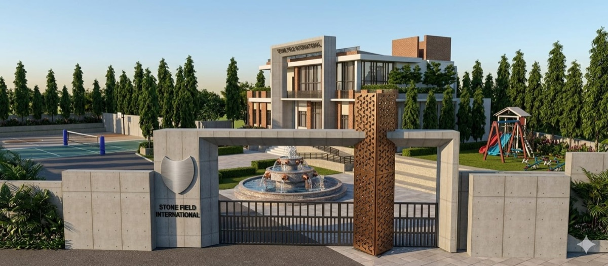
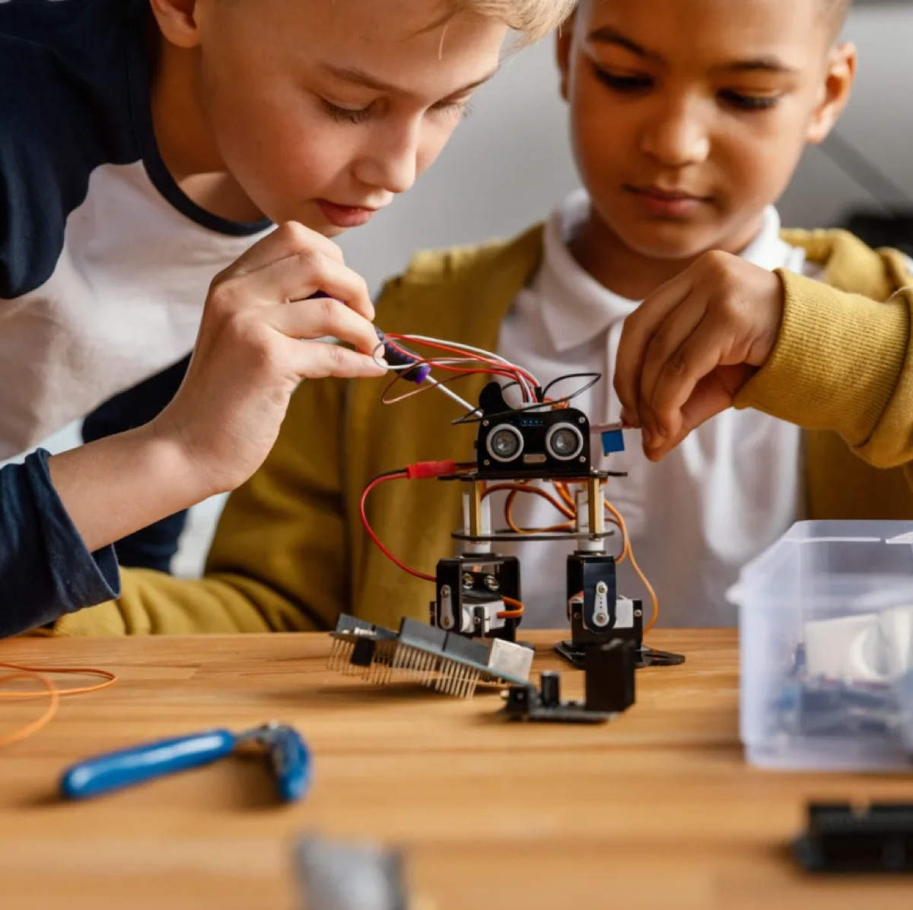
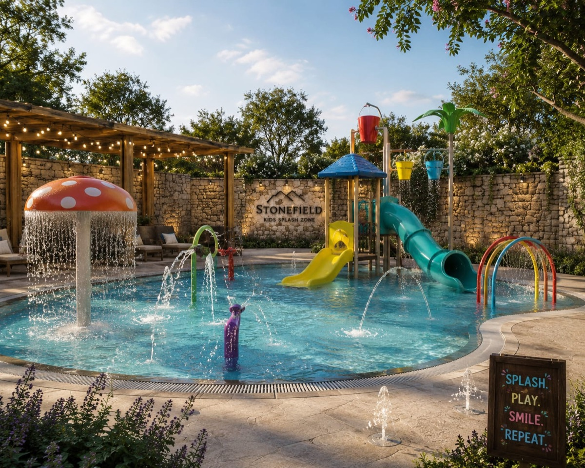
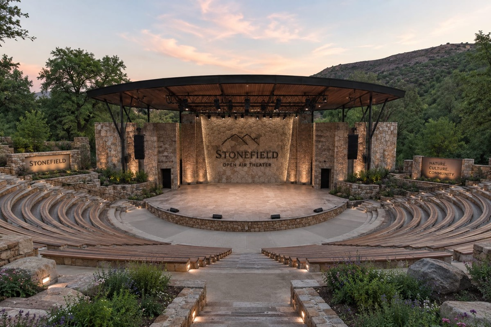

Learn with purpose
Strong academic foundations, thoughtful questions and practical learning that builds understanding.
Kukhnaira–Rehan, Himachal Pradesh
A place for curiosity, confidence
and character to grow.

SPARKS BRIGHTER FUTURES
TURNS POTENTIAL INTO PROGRESS
BUILDS A KINDER TOMORROW
THE CAMPUS FILM
Take a closer look at the Stone Field campus vision.
The film could not load. Open the video directly.
Strong academic foundations, thoughtful questions and practical learning that builds understanding.
Opportunities to explore, express and innovate through technology, projects and creative thinking.
A nurturing community that values teamwork, wellbeing, responsibility and character.
LIFE AT SFIS
Students move, make, perform, think, compete, recharge, and build confidence across the school day.



Campus vision · Illustrative imagery
FOUNDER BLOG
Practical thinking from Neha Sharma and Vinay Sharma on parent partnership, AI, opportunity, and whole-child growth.
Admissions are planned to open in December 2026 for the academic session commencing thereafter. You can register your interest with the enquiry team now.
Our temporary enquiry office is at Kidsverse School, Rehan, until the SFIS campus is complete. Please contact the team to coordinate a campus site visit.
Stone Field International School is founded by Neha Sharma and Vinay Sharma, the team behind Kidsverse Education in Rehan.
Register your interest for the upcoming session. Shortlisted families will be invited for a discussion.